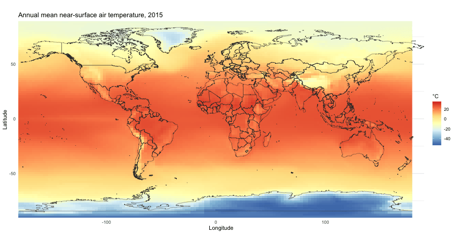

Lecture Code
Lecture 1
Read the daily average maximum temperature in Detroit, MI for the years 1874 to 2021. These data were compiled by Dr. Yuchuan Lai, currently at the University of Wisconsin, Madison, when he was a doctoral student at Carnegie Mellon University. These data are available at: https://kilthub.cmu.edu/articles/dataset/Compiled_daily_temperature_and_precipitation_data_for_the_U_S_cities/7890488
The methods by which these data were gathered are described in a journal article: Lai, Yuchuan, and David A. Dzombak. “Use of Historical Data to Assess Regional Climate Change.” Journal of Climate 32, no. 14 (July 15, 2019): 4299–4320. https://doi.org/10.1175/JCLI-D-18-0630.1.
Plot the daily average maximum temperature
Calculate the daily average maximum temperature from 1874 to 1883
For each year, calculate the difference between avg_tmax_1874_1883 and the tmax, and plot this difference for each year
Lecture 9
The annual mean near-surface air temperature from the Flexible Global Ocean-Atmosphere-Land System (FGOALS) Model, for the SS5-8.5 scenarion, from 2015 to 2100 on a world map. This code can’t run on a browser, because the climate data file (tas_Amon_FGOALS-f3-L_ssp585_r1i1p1f1_gr_201501-210012.nc) cannot be read using a web-app. You can download the file here: https://myumi.ch/DW7RD and run the code below on your own computer to analyze the file and generate the animation below.
library(ncdf4)
library(ggplot2)
nc_path <- "tas_Amon_FGOALS-f3-L_ssp585_r1i1p1f1_gr_201501-210012.nc"
gif_path <- "tas_animation.gif"
nc <- nc_open(nc_path)
lon <- ncvar_get(nc, "lon")
lat <- ncvar_get(nc, "lat")
years <- 2015:2100
# Keep every other grid cell to keep the animation fast
ix <- seq(1, length(lon), by = 2)
iy <- seq(1, length(lat), by = 2)
grid <- expand.grid(lon = lon[ix], lat = lat[iy])
grid$lon <- ifelse(grid$lon > 180, grid$lon - 360, grid$lon) # 0-360 to -180-180
# Annual mean temperature (deg C) for each year, reading 12 months at a time
annual <- lapply(seq_along(years), function(i) {
tas <- ncvar_get(nc, "tas", start = c(1, 1, (i - 1) * 12 + 1), count = c(-1, -1, 12))
apply(tas, c(1, 2), mean)[ix, iy] - 273.15
})
nc_close(nc)
temp_range <- range(unlist(annual)) # same color scale in every frame
world <- map_data("world") # coastlines and borders (needs the maps package)
draw_frame <- function(i) {
grid$temp_C <- as.vector(annual[[i]])
p <- ggplot(grid, aes(lon, lat)) +
geom_raster(aes(fill = temp_C)) +
geom_path(data = world, aes(long, lat, group = group), color = "grey20", linewidth = 0.2) +
scale_fill_distiller(palette = "RdYlBu", limits = temp_range, name = "°C") +
coord_fixed(expand = FALSE) +
labs(
title = paste("Annual mean near-surface air temperature,", years[i]),
x = "Longitude",
y = "Latitude"
) +
theme_minimal()
print(p)
}
# gifski stitches the frames into a GIF (0.15 s per year)
gifski::save_gif(
for (i in seq_along(years)) draw_frame(i),
gif_file = gif_path, width = 900, height = 480, delay = 0.20, progress = FALSE
)[1] "/Users/parthtv/University of Michigan Dropbox/Parth Vaishnav/SEAS Climate Science and Solutions/2026_Accessible Lecture Slides/lecture_code/tas_animation.gif"knitr::include_graphics(gif_path)
The code below extracts the temperature time series for 10 cities at different latitudes, as described below, and saves it in a file called tas_city_timeseries.csv.
| City | Latitude | 2015 mean (°C) |
|---|---|---|
| McMurdo Station | 77.85°S | -22.7 |
| Punta Arenas | 53.16°S | 5.1 |
| Sydney | 33.87°S | 16.6 |
| Singapore | 1.35°N | 27.1 |
| Mumbai | 19.08°N | 26.0 |
| Cairo | 30.04°N | 22.5 |
| Detroit | 42.33°N | 9.4 |
| Moscow | 55.75°N | 4.4 |
| Reykjavik | 64.15°N | 2.1 |
| Longyearbyen | 78.22°N | -11.8 |
# Extract monthly near-surface air temperature for 10 cities from the FGOALS-f3-L
# SSP5-8.5 netCDF file and save as a small CSV that webR can read.
# Run with desktop R (needs ncdf4): Rscript preprocess_tas.R
library(ncdf4)
nc_path <- "tas_Amon_FGOALS-f3-L_ssp585_r1i1p1f1_gr_201501-210012.nc"
out_path <- "tas_city_timeseries.csv"
# Cities ordered south to north, spanning the Antarctic to the Arctic
cities <- data.frame(
city = c("McMurdo Station", "Punta Arenas", "Sydney", "Singapore", "Mumbai",
"Cairo", "Detroit", "Moscow", "Reykjavik", "Longyearbyen"),
lat = c(-77.85, -53.16, -33.87, 1.35, 19.08, 30.04, 42.33, 55.75, 64.15, 78.22),
lon = c(166.67, -70.91, 151.21, 103.82, 72.88, 31.24, -83.05, 37.62, -21.94, 15.63)
)
nc <- nc_open(nc_path)
lon <- ncvar_get(nc, "lon") # 0 to 360
lat <- ncvar_get(nc, "lat")
time <- ncvar_get(nc, "time") # days since 0001-01-01, 365_day calendar
nt <- length(time)
# Convert the 365_day calendar to year and month
year <- 1 + time %/% 365
doy <- time %% 365
month <- findInterval(doy, cumsum(c(0, 31, 28, 31, 30, 31, 30, 31, 31, 30, 31, 30)))
stopifnot(all(diff(year * 12 + month) == 1)) # consecutive months, no gaps
rows <- lapply(seq_len(nrow(cities)), function(i) {
lon360 <- cities$lon[i] %% 360
# circular distance in longitude so cities near the 0/360 seam still work
ix <- which.min(abs(((lon - lon360) + 180) %% 360 - 180))
iy <- which.min(abs(lat - cities$lat[i]))
tas_k <- ncvar_get(nc, "tas", start = c(ix, iy, 1), count = c(1, 1, nt))
data.frame(
city = cities$city[i],
city_lat = cities$lat[i],
city_lon = cities$lon[i],
grid_lat = lat[iy],
grid_lon = ifelse(lon[ix] > 180, lon[ix] - 360, lon[ix]),
year = year,
month = month,
tas_C = round(as.numeric(tas_k) - 273.15, 2)
)
})
nc_close(nc)
out <- do.call(rbind, rows)
write.csv(out, out_path, row.names = FALSE)
cat("Wrote", nrow(out), "rows to", out_path, "\n")Wrote 10320 rows to tas_city_timeseries.csv Plot the monthly near-surface air temperature (FGOALS-f3-L, SSP5-8.5) for 10 cities from the Antarctic to the Arctic
Plot the same time series again, this time with a linear trendline
Calculate the warming rate per decade for each city (the slope of the linear trend), show it with each city’s latitude, and plot the warming rate against the absolute value of the latitude